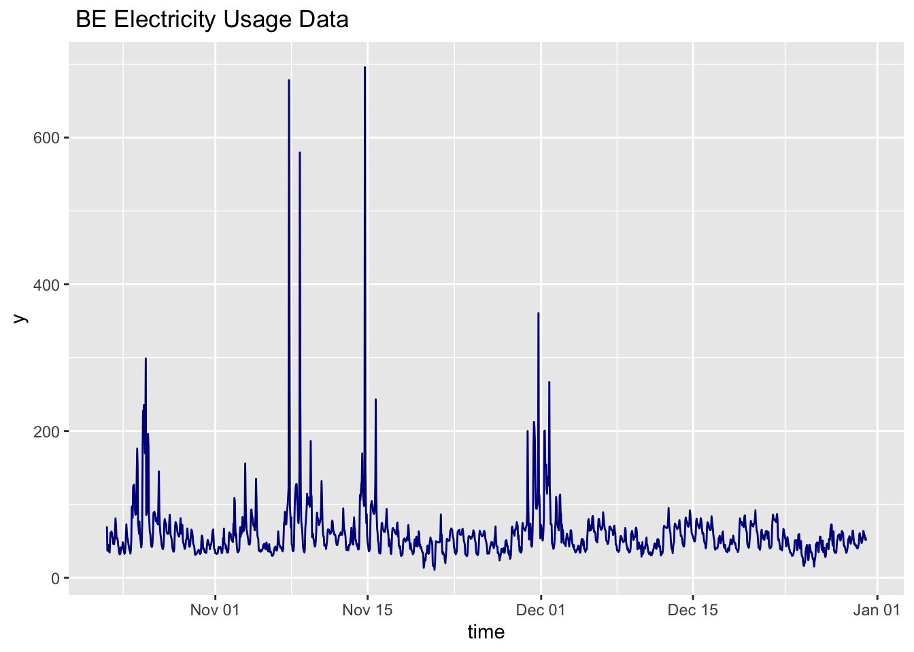
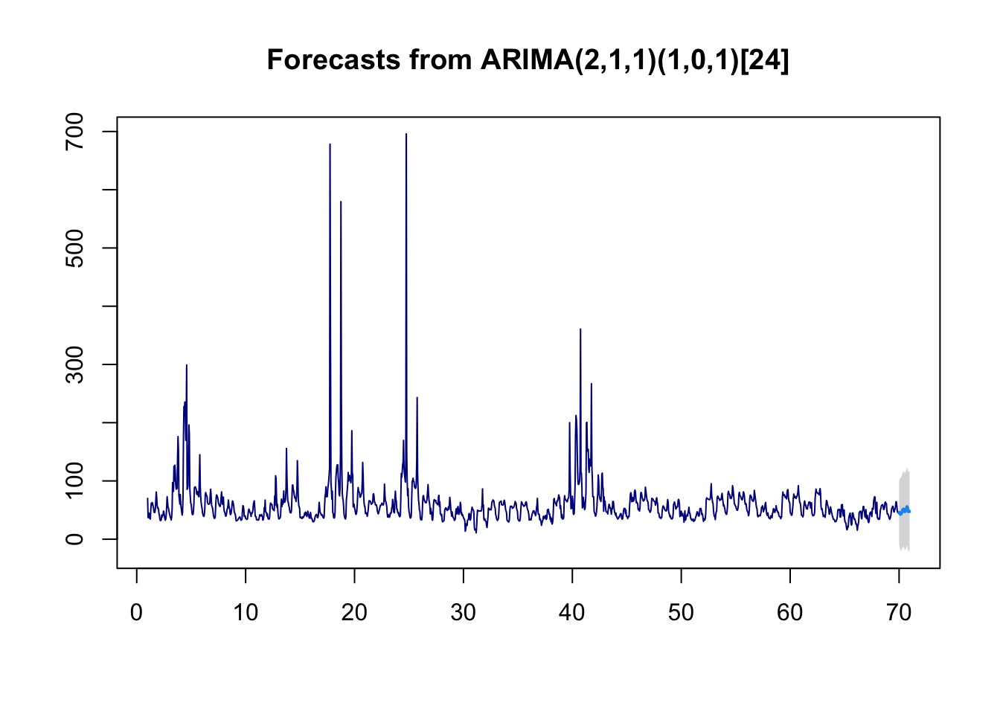
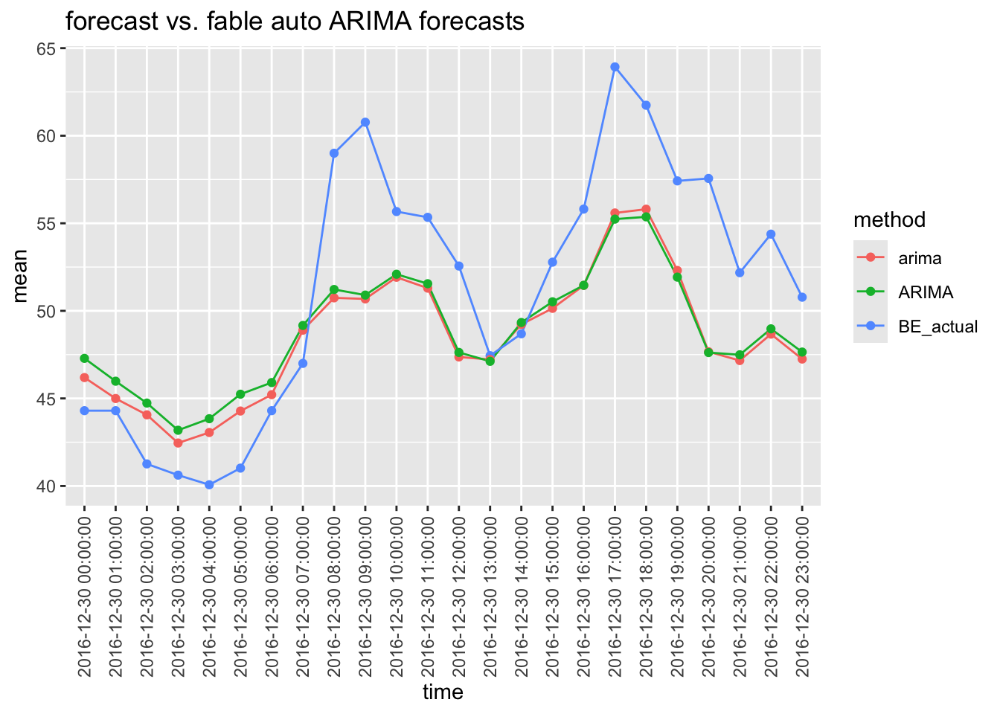
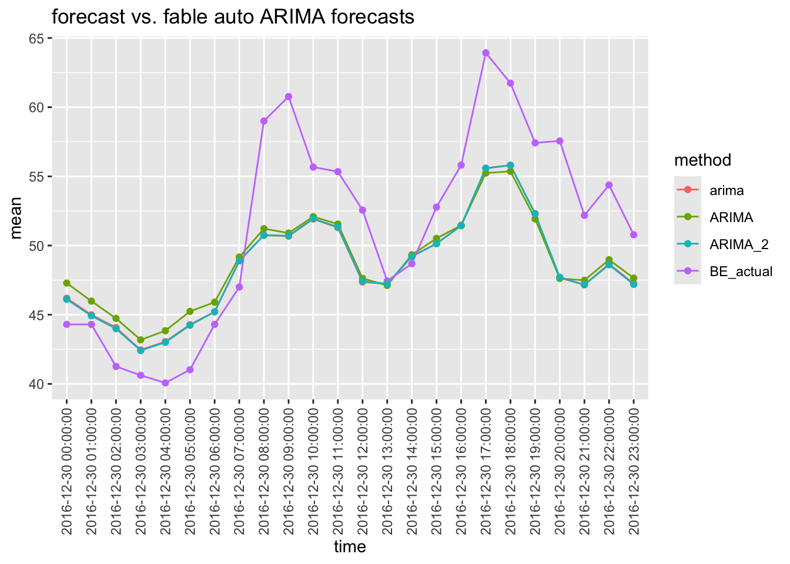
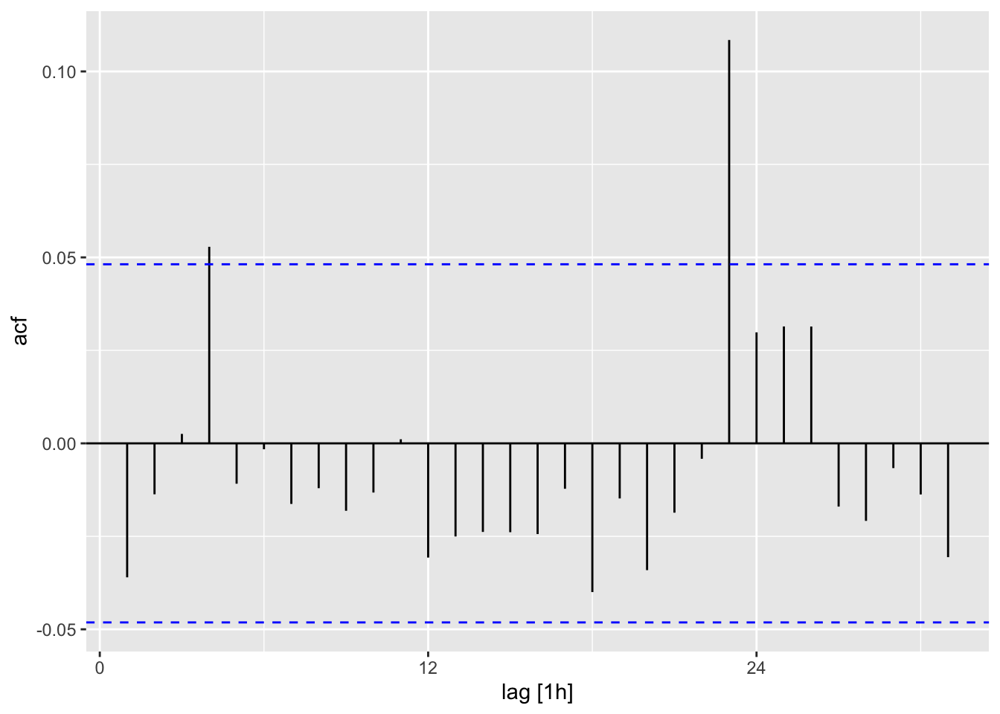
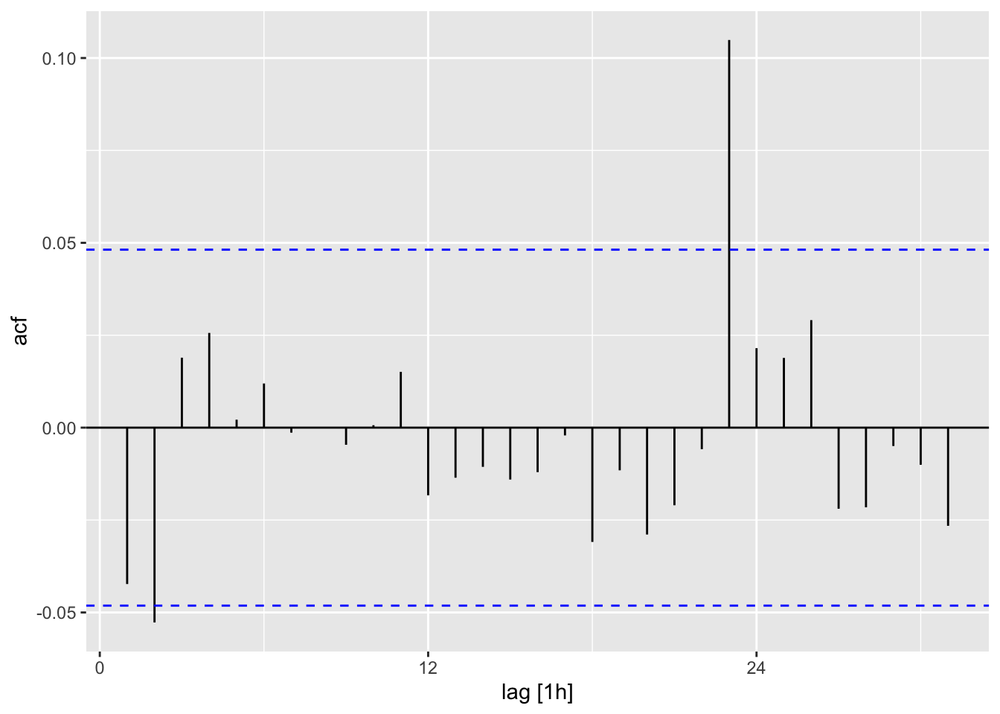
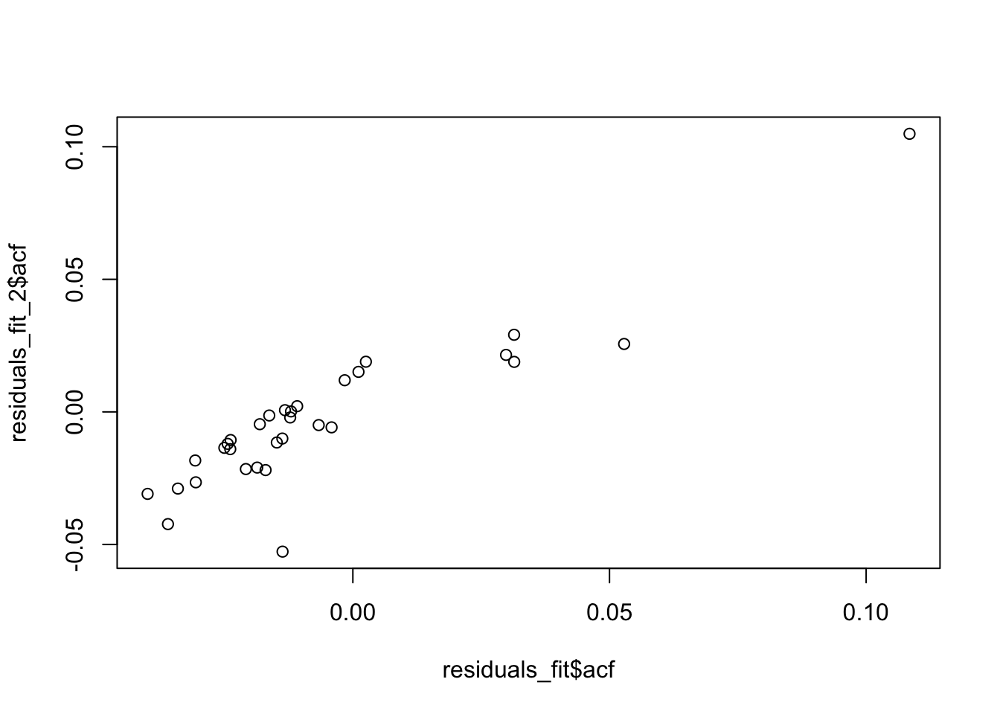

Code
library(tidyverse)
library(forecast)
library(fable)
library(tsibble)
library(nixtlar)
library(feasts)In my previous post A First Look at TimeGPT using nixtlar, I used the auto.arima() function from the forecast package to fit an ARIMA model to a time series of electricity usage data in order to compare and ARIMA forecast with the TimeGPT forecast. While working out the bugs in that post, I also fit an automatic ARIMA model using the newer and improved fable package and was very surprised, maybe even astonished, by the results. In this post I will show what surprised me, repeating some of the code from the earlier post for convenience.
Here are the necessary libraries and the data that we will be working with.
library(tidyverse)
library(forecast)
library(fable)
library(tsibble)
library(nixtlar)
library(feasts)As in the TimeGPT post, I will use the BE electricity usage data set from the nixtlar package for fitting mmodels and makig forecasts. Let’s take a look at the data.
df <- nixtlar::electricity
#glimpse(df)
df2 <- df |> mutate(time = as.POSIXct(ds, format = "%Y-%m-%d %H:%M:%S")) |>
filter(unique_id == "BE") |> select(-unique_id, -ds)
p <- df2 |> ggplot(aes(x = time, y = y)) +
geom_line(color='darkblue') +
ggtitle(" BE Electricity Usage Data")
p
This next block of code splits the data into training and test data with the last 24 observations from the BE data set being held out for forecasting.
NF <- 24
BE_df_wide <- df |> pivot_wider(names_from = unique_id, values_from = y) |>
select(ds, BE) |> drop_na()
BE_train_df <- BE_df_wide %>% filter(row_number() <= n() - NF)
BE_test_df <- tail(BE_df_wide, NF)
BE_train_df <- BE_train_df |> rename(y = BE) |> mutate(unique_id = "BE")
BE_test_df <- BE_test_df |> rename(y = BE)This section of code reformats the training data into a format that is suitable for the auto.arima() which requires that the data be expressed as a ts() object.
train <- BE_train_df |> select(-unique_id) |>
mutate(time = 1:length(ds))|> select(-ds)
elec_ts <- ts(train$y, frequency = 24)And now, the first AIRMA forecast using the forecast package. Notice that the plot title reports that the forecast::arime() function fitted an ARIMA(2,1,1)(1,0,1)[24] model to the data.
#| message: FALSE
#| warning: FALSE
#arima <- elec_ts |>
# forecast::auto.arima() |>
# forecast(h = NF , level = 95)
#saveRDS(arima, "arima_forecast.rds")
arima<- readRDS("arima_forecast.rds")
plot(arima, col="darkblue")
Here, I extract the forecast and set up a data frame to hold the comparative forecasts.
#| message: FALSE
#| warning: FALSE
arima_fcst_df <- BE_test_df |>
mutate(time = ds,
BE_actual = y,
arima = as.vector(arima$mean)) |>
select(-ds,-y)
head(arima_fcst_df,3)# A tibble: 3 × 3
time BE_actual arima
<chr> <dbl> <dbl>
1 2016-12-30 00:00:00 44.3 46.2
2 2016-12-30 01:00:00 44.3 45.0
3 2016-12-30 02:00:00 41.3 44.1auto_train <- BE_train_df |> select(-unique_id) |>
mutate(time = as.POSIXct(ds, format = "%Y-%m-%d %H:%M:%S")) |> select(-ds)
elec_ts_2 <- auto_train |> as_tsibble(index = time) |> fill_gaps(time, .full = start())Here is the automatic ARIMA model fit using the fable package and the big surprise. fable fit an ARIMA(0,1,4)(0,0,2)[24] to the data which is quite different from the ARIMA(2,1,1)(1,0,1)[24] model that the forecast package fit.
fit <- elec_ts_2 %>%
model(
arima_fable = ARIMA(y)
)
fable_ARIMA_fcst <- fit |> forecast(h = 24)
fit# A mable: 1 x 1
arima_fable
<model>
1 <ARIMA(0,1,4)(0,0,2)[24]>Let’s work out the short hand notation for the two models and see what the math looks like.
This notation translates into: \[(1−\phi_1B−\phi_2B^2)(1−\Phi_1B^24)(1−B)y_t=(1−\theta_1B)(1−\Theta_1B^24)\varepsilon_t\]
which fully expands to:
\[ y_t−y_{t−1}−\phi_1y_{t−1}+\phi_1y_{t−2}−\phi_2y_{t−2}+\phi_2y_{t−3}−\Phi_1y_{t−24}+\Phi_1y_{t−25}+\phi_1\Phi_1y_{t−25}−\phi_1\Phi_1y_{t−26}+\phi_2\Phi_1y_{t−26}−\phi_2\Phi_1y_{t−27}=\varepsilon_t−\theta_1ε_{t−1}−\Theta_1\varepsilon_{t−24}+\theta_1\Theta_1\varepsilon_{t−25}\]
This notation translates into:
\[(1 - B)y_t = (1 - \theta_1B - \theta_2 B^2 - \theta_3 B^3 - \theta_4 B^4)(1 - \Theta_1 B^{24} - \Theta_2 B^{48})\varepsilon_t\] which expands into:
\[y_t−y_{t−1}=\varepsilon_t−\theta_1\varepsilon_{t−1}−\theta_2\varepsilon_{t−2}−\theta_3\varepsilon_{t−3}−\theta_4\varepsilon_{t−4}−\Theta_1\varepsilon_{t−24}+\theta_1\Theta_1\varepsilon_{t−25}+\theta_2\Theta_1\varepsilon_{t−26}+\theta_3\Theta_1\varepsilon_{t−27}+\theta_4\Theta_1\varepsilon_{t−28}−\Theta_2\varepsilon_{t−48}+ \theta_1\Theta_2\varepsilon_{t−49} +\theta_2\Theta_2\varepsilon_{t−50}+\theta_3\Theta_2\varepsilon_{t−51}+\theta_4\Theta_2\varepsilon_{t−52}\] These mathematical models don’t look anyting alik and I have no intuition why they should so let’s see how the forecasts compare
Put the fable forecast upper case ARIMA into the data frame.
#| code-fold: true
#| code-summary: "Show the code"
arima_fcst_df <- arima_fcst_df |> mutate(ARIMA = as.vector(fable_ARIMA_fcst$.mean) )
head(arima_fcst_df,3)# A tibble: 3 × 4
time BE_actual arima ARIMA
<chr> <dbl> <dbl> <dbl>
1 2016-12-30 00:00:00 44.3 46.2 47.3
2 2016-12-30 01:00:00 44.3 45.0 46.0
3 2016-12-30 02:00:00 41.3 44.1 44.7Plot and compare.
compare_fore <- function(file){
arima_fcst_long_df <- file %>%
pivot_longer(!time, names_to = "method", values_to = "mean")
q <- arima_fcst_long_df |>
ggplot(aes(
x = time,
y = mean,
group = method,
color = method
)) +
theme(axis.text.x = element_text(angle = 90, vjust = 0.5, hjust=1)) +
geom_line() +
geom_point() +
ggtitle("forecast vs. fable auto ARIMA forecasts")
q
}
compare_fore(arima_fcst_df)
The two forecasts are almost on top of each other and the RMSE values are very close.
RMSE <- function(m, o){sqrt(mean((m - o)^2))}
rms_names <- c("arima", "ARIMA")
rms_fcst <- array(NA_real_,
dim = 2,
dimnames = list(rms_names))
rms_fcst[1] <- RMSE(arima_fcst_df$arima, arima_fcst_df$BE_actual)
rms_fcst[2] <- RMSE(arima_fcst_df$ARIMA, arima_fcst_df$BE_actual)
rms_fcst arima ARIMA
4.966623 5.041250 So I was surprised, but should I have been? - Probably not, for example consider this observation from page 305 of the classic textbook by Brockwell and Davis.
Of course in the modelling of real data there is rarely such a thing as the “true order”. For the process \(X_t = \sum_{j=0}^{\infty} \psi_jZ_{t-j}\) there may be many polynomials \(\theta(z)\), \(\phi(z)\) such that the coefficients of \(z^j\) in \(\theta(z)/\phi(z)\) closely approximate \(\psi_j\) for moderately small values of j. Correspondingly there may be many ARMA processes with properties similar to {X,}. This problem of identifiability becomes much more serious for multivariate processes.
As a check on the stability of the apparent equivalence of the two models, I will use the fable package to fit the ARIMA(0,1,4)(0,0,2)[24] model discovered by the forecast package to the data.
fit_2 <- elec_ts_2 %>%
as_tsibble() %>%
model(ARIMA_2 = ARIMA(y ~ 0 + pdq(2, 1, 1) + PDQ(1, 0, 1))) %>%
report()Series: y
Model: ARIMA(2,1,1)(1,0,1)[24]
Coefficients:
ar1 ar2 ma1 sar1 sma1
0.4310 0.0504 -0.9373 0.3290 0.1765
s.e. 0.0328 0.0302 0.0204 0.0529 0.0560
sigma^2 estimated as 711.8: log likelihood=-7785.05
AIC=15582.11 AICc=15582.16 BIC=15614.58Make the forecast and add it to the plotting data frame.
fable_ARIMA_fcst_2 <- fit_2 |> forecast(h = 24)
arima_fcst_df <- arima_fcst_df |> mutate(ARIMA_2 = as.vector(fable_ARIMA_fcst_2$.mean) )
head(arima_fcst_df,3)# A tibble: 3 × 5
time BE_actual arima ARIMA ARIMA_2
<chr> <dbl> <dbl> <dbl> <dbl>
1 2016-12-30 00:00:00 44.3 46.2 47.3 46.1
2 2016-12-30 01:00:00 44.3 45.0 46.0 44.9
3 2016-12-30 02:00:00 41.3 44.1 44.7 44.0And plot all three forecasts.
compare_fore(arima_fcst_df)
RMSE <- function(m, o){sqrt(mean((m - o)^2))}
rms_names <- c("arima", "ARIMA", "ARIMA_2")
rms_fcst <- array(NA_real_,
dim = 3,
dimnames = list(rms_names))
rms_fcst[1] <- RMSE(arima_fcst_df$arima, arima_fcst_df$BE_actual)
rms_fcst[2] <- RMSE(arima_fcst_df$ARIMA, arima_fcst_df$BE_actual)
rms_fcst[3] <- RMSE(arima_fcst_df$ARIMA_2, arima_fcst_df$BE_actual)
rms_fcst arima ARIMA ARIMA_2
4.966623 5.041250 4.954435 residuals_fit <- fit %>%
augment() %>% # Get fitted values and residuals
ACF(.resid) # Compute ACF of residuals
autoplot(residuals_fit)
residuals_fit_2 <- fit_2 %>%
augment() %>% # Get fitted values and residuals
ACF(.resid) # Compute ACF of residuals
autoplot(residuals_fit_2)
residuals_fit# A tsibble: 31 x 3 [1h]
# Key: .model [1]
.model lag acf
<chr> <cf_lag> <dbl>
1 arima_fable 1h -0.0360
2 arima_fable 2h -0.0137
3 arima_fable 3h 0.00254
4 arima_fable 4h 0.0528
5 arima_fable 5h -0.0109
6 arima_fable 6h -0.00159
7 arima_fable 7h -0.0163
8 arima_fable 8h -0.0121
9 arima_fable 9h -0.0181
10 arima_fable 10h -0.0132
# ℹ 21 more rowsresiduals_fit_2# A tsibble: 31 x 3 [1h]
# Key: .model [1]
.model lag acf
<chr> <cf_lag> <dbl>
1 ARIMA_2 1h -0.0423
2 ARIMA_2 2h -0.0527
3 ARIMA_2 3h 0.0189
4 ARIMA_2 4h 0.0256
5 ARIMA_2 5h 0.00216
6 ARIMA_2 6h 0.0119
7 ARIMA_2 7h -0.00135
8 ARIMA_2 8h 0.000177
9 ARIMA_2 9h -0.00464
10 ARIMA_2 10h 0.000659
# ℹ 21 more rowsplot(residuals_fit$acf, residuals_fit_2$acf)
Note from page 305 from Brockwell and Davis
Of course in the modelling of real data there is rarely such a thing as the “true order”. For the process X, = L� o l/JjZr -j there may be many polynomials 8(z), ¢(z) such that the coefficients of zj in 8(z)j¢(z) closely approximate l/Jj for moderately small values of j. Correspondingly there may be many ARMA processes with properties similar to {X,}. This problem of identifiability becomes much more serious for multivariate processes.
Difference equation
\[\[ \Phi(B^s) \phi(B) (1 - Bs)D (1 - B)^d y_t = \Theta(B^s) \theta(B) \varepsilon_t \]\]]
Brockwell, Peter J. and Richard A. Davis, Time Series: Theory and Methods, 2nd ed, Springer (2002)